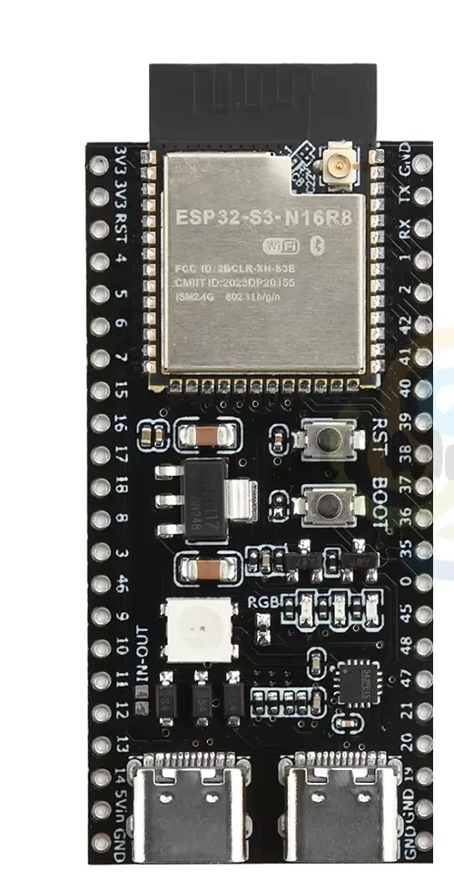
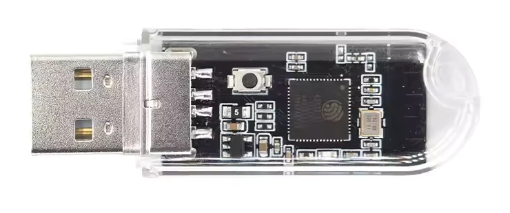
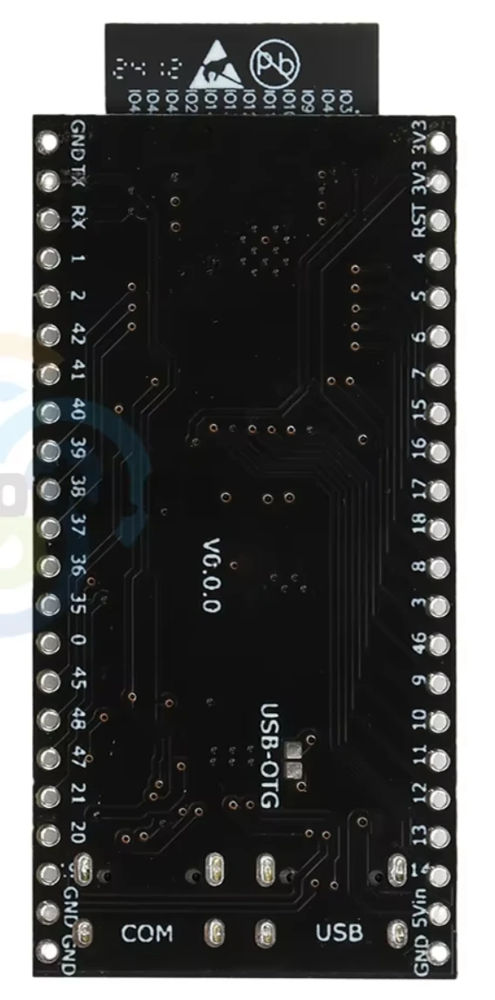
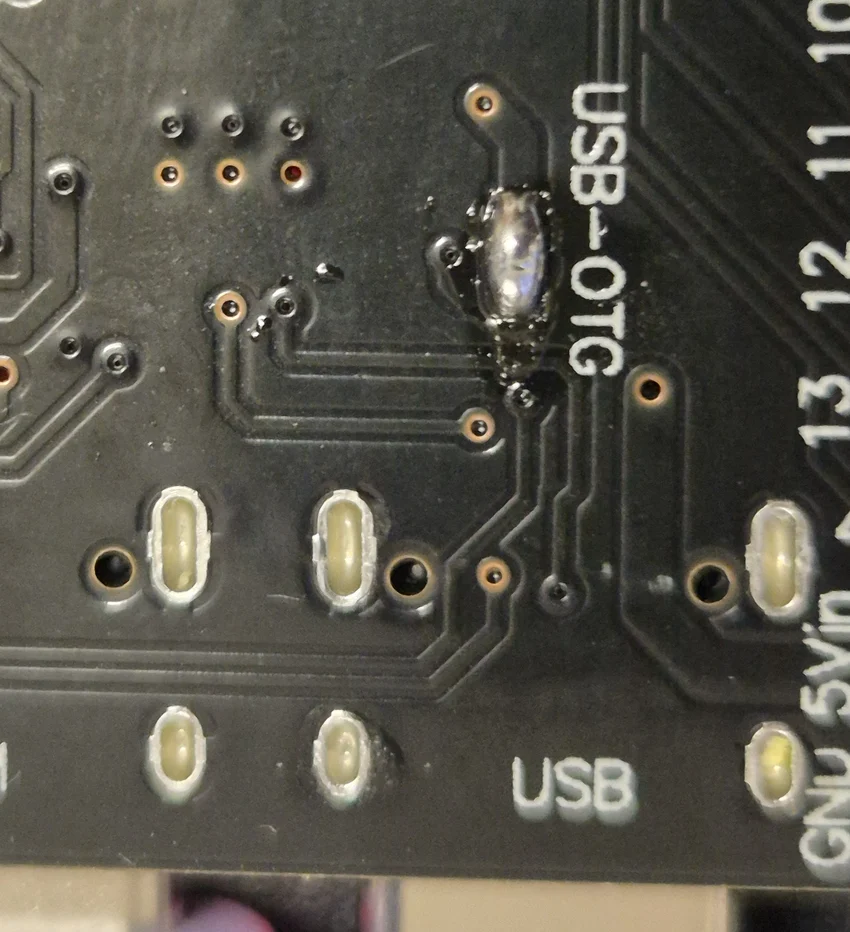
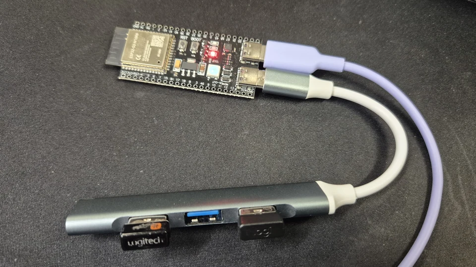
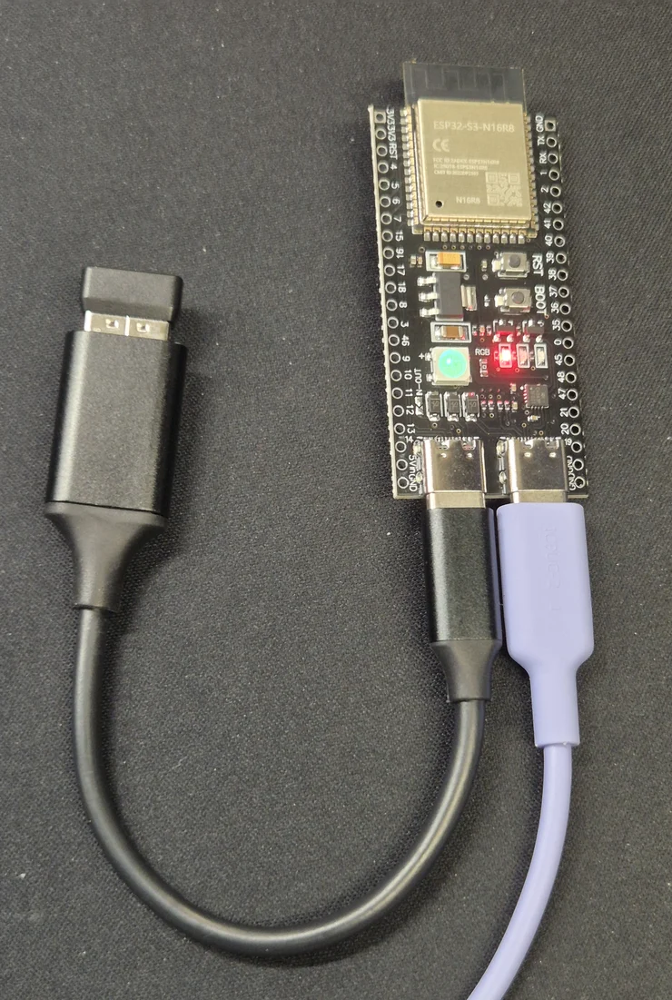

KMSwitcher
Quick start
Flash your dongles, connect your keyboard and mouse, and pair your computers. Use desktop Chrome or Edge for flashing.
Firmware v0.2.0 · Release notes
1. Flash the S3 Master
With the components facing you and the ports at the bottom, connect the right-hand USB-C port (COM/UART) to your computer with a USB data cable.
Choose Flash S3 Master, select its serial port, and wait for verification. Then unplug the S3.
Technical details
Connection help and erase
If the S3 won’t connect, hold BOOT, tap RST, then release BOOT and retry. Close other apps using the port and check that your cable carries data.
Erasing clears firmware, settings, and pairings.

2. Flash each S2 Slave
With the S2 unplugged, hold its BOOT button while plugging it into your computer. Release the button after plugging it in.
Choose Flash S2 Slave, select its serial port, and wait for verification. Unplug it and repeat for each S2, one at a time.
Connection help and erase
If no serial port appears, unplug the S2 and hold BOOT as you reconnect it. Close other apps using the port and try another USB port.
Erasing clears firmware, settings, and pairings.

3. Power the S3’s USB accessories
Use an externally powered USB hub. This is the simplest option. Connect the hub’s own power supply and leave the S3’s USB-OTG jumper as it is.
Use a direct adapter or an unpowered hub instead
On the board shown, bridging the two pads marked USB-OTG lets the S3 supply power through its native USB port. Unplug both USB cables and flip the board over. With the ports at the bottom, find the two pads just above the port marked USB, beside the vertical USB-OTG label. Join those two pads with solder as shown. If your board differs or you’re unsure which pads to bridge, use a powered hub.



4. Connect your keyboard and mouse
With the S3’s components facing you and the ports at the bottom, plug the hub into the left USB-C port (USB). If you bridged the USB-OTG pads, you can also connect a single receiver directly using a USB-C to USB-A adapter.
On a hub, connect a USB keyboard and mouse or up to two keyboard/mouse receivers. If you left the USB-OTG pads open, plug the hub into its own power supply. Then power the S3 through the right USB-C port (COM).




5. Open pairing on the S3
Plug the first S2 into the computer you want to control. Leave its button released as you plug it in.
On the keyboard connected to the S3, quickly tap and release the same Ctrl key twice, then press P, then 1. The S3 LED flashes blue for the 30-second pairing window.
6. Pair the S2 and test switching
Within those 30 seconds, hold the plugged-in S2’s button for about three seconds, then release it.
Double-tap Ctrl and press 1 to select that computer. Try typing and moving the mouse. For each additional S2, repeat steps 5 and 6 with the next number, up to 7.
Pairing didn’t work?
Open pairing on the S3 again, then hold the S2’s button while it is already plugged in. If you changed the S3’s shortcut key, use your saved key in place of Ctrl.
7. Install the optional Companion
Keyboard switching already works after pairing. For screen-edge switching and clipboard sharing, run the Companion on each participating computer. Open Settings → Desk layout, arrange your screens, save the layout, and enable automatic switching.
Companion v0.2.0 · All releases